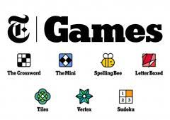

About Red Sox
The Boston Red Sox, established in 1901 and known for their iconic home stadium, Fenway Park, are one of Major League Baseball's most storied franchises. With a history marked by numerous World Series championships, including a historic 2004 victory that ended an 86-year championship drought, the Red Sox have consistently delivered thrilling baseball moments. Their fierce rivalry with the New York Yankees, legendary players like Ted Williams and David Ortiz, and a dedicated global fan base, known as Red Sox Nation, have solidified their status as one of baseball's most beloved and competitive teams, making them a source of pride for Boston and fans worldwide
If you are bored you can play the below games for free by clicking the images
Smash The Wall
New York Times games

Hacker Typer (type something)